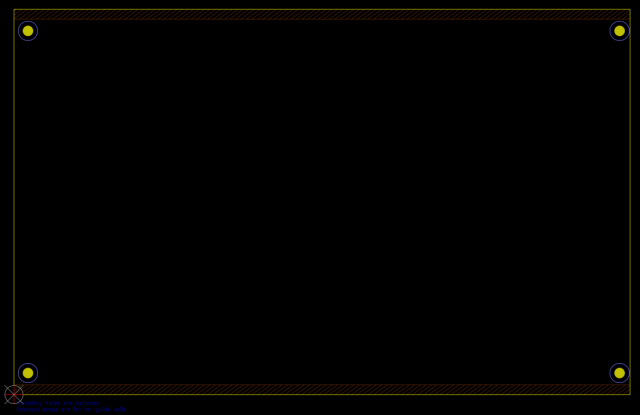

This project template provides the outline of a standard 3U EuroCard measuring 160mm by 100mm. This design is based on IEEE Std 1101.1-1998, and has keepout zones for the mounting rails (optional) mounting holes placed appropriately. Note that the IEEE standard also includes a 3x32 DIN41612 Type C connector (Connector_DIN:DIN41612_C_3x32_Male_Horizontal_THT in the footprint library) that is not part of the original EuroCard standard.

(c) 2017 David Griffith
(c) 2021 Caleb Reister